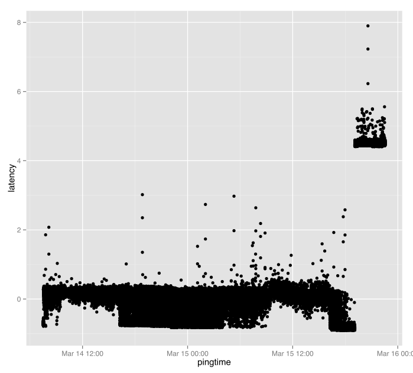
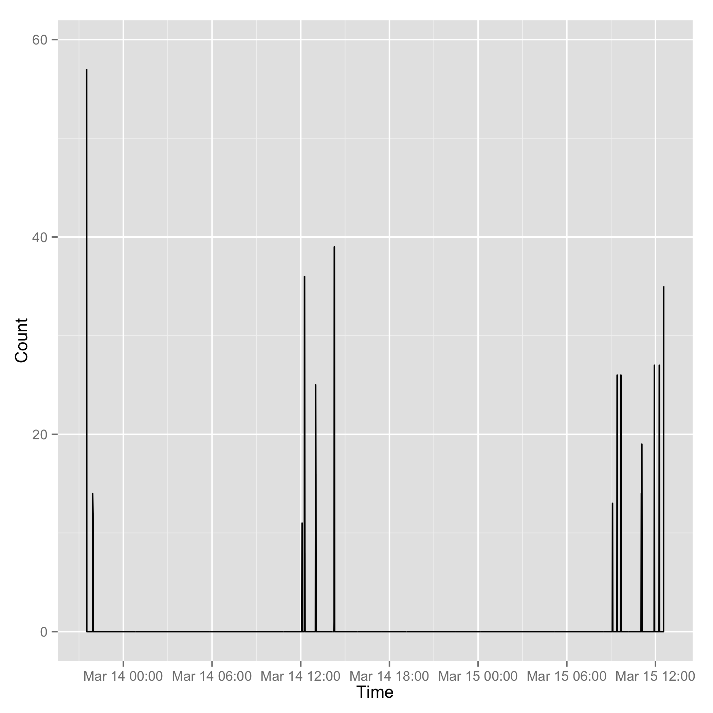
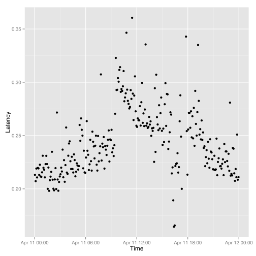

I collected trade and order ticks for 12 contracts on 14th March from iqfeed, and timestamped each tick with current system time. There was about 8 million data points.
feed ping latency
Iqfeed sends a ping once a second as part of the stream.
t = read.csv("data/streamt.txt",header=FALSE,as.is=TRUE) pingtime = strptime(t[,3], "%Y%m%d %H:%M:%S") stamp = strptime(paste(strftime(pingtime,"%Y%m%d"), t[,1], sep=" "), "%Y%m%d %H:%M:%OS") latency = as.double(stamp - pingtime) df = data.frame(pingtime=pingtime, latency=latency) summary(df)
| Min. :2013-03-14 07:30:57 | Min. :-0.90665 |
| 1st Qu.:2013-03-14 17:15:41 | 1st Qu.:-0.01492 |
| Median :2013-03-15 03:02:15 | Median : 0.14950 |
| Mean :2013-03-15 03:01:28 | Mean : 0.38876 |
| 3rd Qu.:2013-03-15 12:46:33 | 3rd Qu.: 0.22824 |
| Max. :2013-03-15 22:33:24 | Max. : 7.89887 |
| NA's :1 | NA's :1 |
require(ggplot2) qplot(data=df, x=pingtime, y=latency) ggsave("ping-latency.svg")

The simple scatterplot shows many negative values, especially when the market is open, and a step jump in the later pings (when no quotes were being recorded). These jumps may be due to changes in my system clock (automatic appletime resolutions) or due to a lack of accuracy in the iqfeed pings.
Scatterplots tend to provide dubious visualisation for bigdata, and a new package out that helps is bigvis.
Bigvis is not yet available at CRAN but can be installed via a github repository (see https://github.com/hadley/bigvis for details).
install.packages("devtools") devtools::install_github("bigvis")
Bigvis doesn't handle non-numeric data (like time), so rather than autopilot, I use ggplot directly.
require(bigvis) require(ggplot2) dfn = condense(bin(as.double(df$pingtime),60),bin(df$latency,.1)) dfg = data.frame(as.POSIXct(dfn[,1],origin="1960-01-01", tz="GMT"),dfn[,2],dfn[,3]) colnames(dfg) = c("Time","Latency","Count") g = ggplot(data=dfg,aes(x=Time,y=Latency)) g + geom_tile(aes(fill=Count)) + scale_fill_gradient(low="#e5e5e5", high = "#444548") + scale_y_continuous(limits=c(-1,1)) ggsave("ping-latency-condensed.svg")

Using the bigvis techniques clarifies a few main issues for further research:
- there is a step jump near market open where the majority of the pings jump from around 250 msecs to -750 msecs. This looks like either a coding error or the ping being off by up to a second.
- during market open (when tick volume is high) ping can vary by a second.
disconnects
Just looking at the ping counts after binning into one minute intervals:
df.dis = condense(bin(as.double(df$pingtime),60)) dfg = data.frame(as.POSIXct(df.dis[,1],origin="1960-01-01", tz="GMT"),60-df.dis[,2]) colnames(dfg) = c("Time","Count") g = ggplot(data=dfg,aes(x=Time,y=Count)) g + geom_line(aes()) ggsave("disconnects.png")

iqfeed regularly suffers from disconnects with reconnection occuring within a minute.
event latency
The ticks for the day were processed into column-data formats using the mmap package from R (see hyperq.org for the gory details).
From the R database of the one day quote ticks…
- open data
rm(list = ls()) require("mmap") require("rindex") require("plyr") require("stringr") raw.stream = "streamqh" # where the mmap db is located db.path = paste("data/",raw.stream,"/",sep="") load(paste(db.path,".Rdbinfo",sep="")) #m = mmap(main.filename, mode=st) stream = NULL stream$stamp = mmap(paste(db.path,fields[1],".data",sep=""), mode=double()) stream$code = mmap(paste(db.path,fields[2],".data",sep=""), mode=char(1)) stream$symbol = mmap(paste(db.path,fields[3],".data",sep=""), mode=char(ticker.length)) stream$trade = mmap(paste(db.path,fields[4],".data",sep=""), mode=double()) stream$vol = mmap(paste(db.path,fields[5],".data",sep=""), mode=integer()) stream$tradetime = mmap(paste(db.path,fields[6],".data",sep=""), mode=double()) stream$tradeex = mmap(paste(db.path,fields[7],".data",sep=""), mode=double()) stream$volex = mmap(paste(db.path,fields[8],".data",sep=""), mode=integer()) stream$tradetimeex = mmap(paste(db.path,fields[9],".data",sep=""), mode=double()) stream$voltot = mmap(paste(db.path,fields[10],".data",sep=""), mode=integer()) stream$bid = mmap(paste(db.path,fields[11],".data",sep=""), mode=double()) stream$bidvol = mmap(paste(db.path,fields[12],".data",sep=""), mode=integer()) stream$bidtime = mmap(paste(db.path,fields[13],".data",sep=""), mode=double()) stream$ask = mmap(paste(db.path,fields[14],".data",sep=""), mode=double()) stream$askvol = mmap(paste(db.path,fields[15],".data",sep=""), mode=integer()) stream$asktime = mmap(paste(db.path,fields[16],".data",sep=""), mode=double()) stream$event = mmap(paste(db.path,fields[17],".data",sep=""), mode=char(12)) stream$id = mmap(paste(db.path,fields[18],".data",sep=""), mode=integer())
- Define events and extract relevant times
n = length(stream$event[]) tC = grepl("C",stream$event[]) tO = grepl("O",stream$event[]) ta = grepl("a",stream$event[]) tb = grepl("b",stream$event[]) ta = ta & !(tC | tO) tb = tb & !(tC | tO | ta) tother = !(ta | tb | tC | tO) event.category = (1 * tC) + (2 * tO) + (3 * ta) + (4 * tb) + (5 * tother) event.time = (stream$tradetime[] * tC + stream$tradetimeex[] * tO + stream$asktime[] * ta + stream$bidtime[] * tb + stream$tradetime[] * tother) event.time.posix = as.POSIXct(event.time,origin="1960-01-01", tz="GMT") event.stamp = stream$stamp[] event.latency = event.stamp - event.time event.df = data.frame(symbol=stream$symbol[],event.category,event.time, event.stamp, event.latency) summary(event.df)
@ESM13 :2553308 Min. :1.000 Min. :1.366e+09 Min. :1.366e+09 Min. :-85800.76 @NQM13 :1285545 1st Qu.:3.000 1st Qu.:1.366e+09 1st Qu.:1.366e+09 1st Qu.: 0.22 @YMM13 :1216006 Median :3.000 Median :1.366e+09 Median :1.366e+09 Median : 0.33 EBK13 : 917275 Mean :3.107 Mean :1.366e+09 Mean :1.366e+09 Mean : 226.44 @JYM13 : 844995 3rd Qu.:4.000 3rd Qu.:1.366e+09 3rd Qu.:1.366e+09 3rd Qu.: 600.22 EBM13 : 610827 Max. :5.000 Max. :1.366e+09 Max. :1.366e+09 Max. : 9818.25 (Other):1373320 nil nil nil nil - bigvis manipulations
require("bigvis") require("ggplot2") df1 = condense(bin(event.df$event.time,60),bin(event.df$event.latency,0.05)) df2 = df1[(df1$event.df.event.latency > 0) & (df1$event.df.event.latency < 1),] dfg = data.frame(as.POSIXct(df2[,1]+10*60*60,origin="1960-01-01", tz=""),df2[,2],df2[,3]) colnames(dfg) = c("Time","Latency","Count") g = ggplot(data=dfg,aes(x=Time,y=Latency)) g + geom_tile(aes(fill=Count)) + scale_fill_gradient(low="#e5e5e5", high = "#444548") + scale_y_continuous(limits=c(-1,1)) ggsave("quote-latency-condensed.svg")

Unlike the iqfeed ping, there is a consistent latency pattern when comparing market stamp and local system stamp, with no spurious negative values. Latency values from 9am to 4pm (regular market open) at 500 millsecs are common and may be due to TCP issues (dropped packets say).
- symbols
summary(as.factor(stream$symbol[]))
- emini latency
The latency pattern for the E-MINI SP500 (@ESM13 is the iqfeed code) is very similar to the overall latency pattern. The average latency over the day was:
require(ggplot2) require(bigvis) ind.emini = indexEQ(ind.symbol,"@ESM13 ") df1 = condense(bin(event.df$event.time[ind.emini],300,name="time"),bin(event.df$event.latency[ind.emini],0.05,name="latency")) df2 = df1[(df1$latency > 0) & (df1$latency < 2),] lat.av = tapply(df2$latency*df2$.count,df2$time,sum)/tapply(df2$.count,df2$time,sum) dfg = data.frame(Time=as.POSIXct(as.double(row.names(lat.av))+10*60*60,origin="1960-01-01", tz=""),Latency=lat.av) #colnames(dfg) = c("Time","Latency","Count") g = ggplot(data=dfg,aes(x=Time,y=Latency)) g + geom_point() ggsave("quote-latency-averagecondensed.svg")
